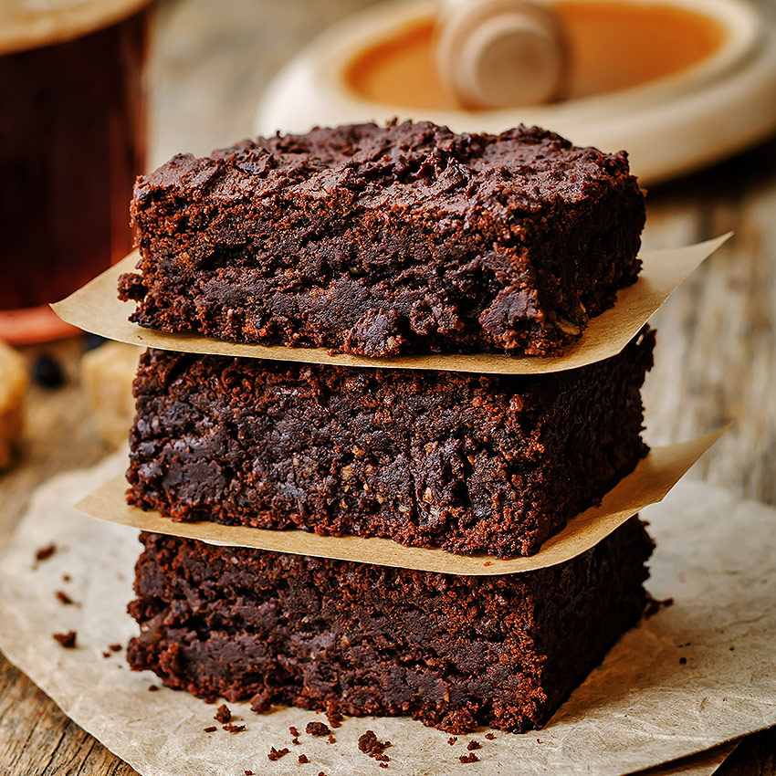

Reteta 1: Negrese

Negresa este una din cele mai populare prăjituri de casă, cu gust inconfundabil de cacao și miez moale, este ușor de preparat și potrivit pentru orice ocazie.
Reteta 2: Cheesecake clasic cu capsuni
Această rețetă de cheesecake este singura rețetă de cheesecake de care veți avea vreodată nevoie. Un cheesecake de vis, bogat, fin și absolut delicios, acoperit cu topping de căpșuni! Din asta sunt făcute cu adevărat visele de cheesecake!
Reteta 3: Placinta cu mere

Plăcinta cu mere este, cu siguranță, desertul copilăriei pentru mulți dintre noi. Este un preparat care se face cu minim de efort și cu bani puțini. Plăcinta cu mere este una dintre cele mai simple, aromate, gustoase și fragede prăjituri pe care le poți face acasă, fără să petreci prea mult timp în bucătărie sau să-ți golești portofelul. Învață rețeta tradițională pentru plăcintă cu mere!